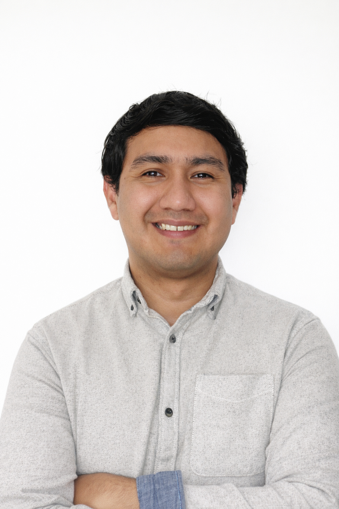

📍 Madrid
📧 carlose.moreno594@gmail.com
📞 625 99 32 18
Estudiante de ASIR con formación en sistemas operativos, redes y bases de datos. Titulado en el Certificado de Profesionalidad IFCT0210 en Operación de Sistemas Informáticos. Amplia experiencia laboral en distintos sectores, destacando gestión documental, atención al cliente y trabajo administrativo. Interés en desarrollarme como técnico de sistemas, soporte técnico o administrador junior.
Desarrollarme como técnico de sistemas, soporte técnico o administrador junior, ampliando mis conocimientos en redes, servidores y seguridad informática.
Si deseas una versión completa en PDF de mi currículum:
📄 Ver y descargar CV en PDF